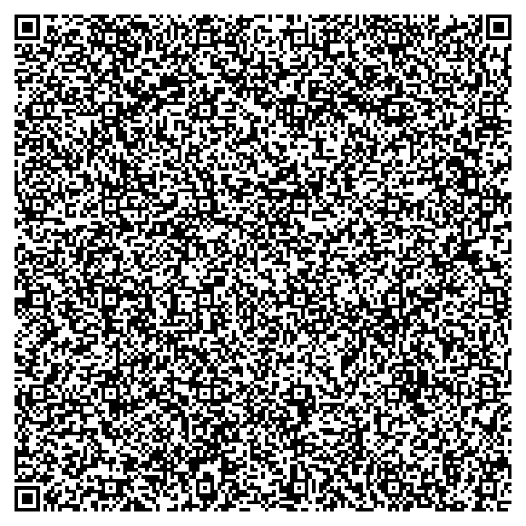

1,984 weights, 444 characters of JavaScript, no server

Or watch it run here, from the same link:
So what language does it model? The names of AI models. It read 1,215 real ones, like gpt-4o-mini and claude-3-5-sonnet, and now it makes up its own. A few are better than the real thing.
Nothing runs on a server. The QR code is a link, and everything after the # in that link is the model: 444 characters of JavaScript and 1,984 weights. Browsers don't send that part of a link to the server, so all q.shayon.work does is hand out a small page that reads the model from the address bar and runs it.
Part 1 · The QR code
Type the beginning of a name and the model writes the rest.
Or try
Tap any letter to see what the model was choosing between at that point.
That's all a language model does. It looks at what's written so far, gives every possible next character a probability, picks one, and goes again. The large models work the same way, with pieces of words instead of characters and billions of weights instead of 1,984.
This one is tiny, but it's the real thing. It's the design Bengio and his colleagues described in 2003, in a paper called “A Neural Probabilistic Language Model”.
The link has four parts.
HTTPS://Q.SHAYON.WORK/#address444program lengthfor(n=BigInt(d),W=[],i=1984;…program, 444 characters8998716153969059216126…weights, 2,959 digitsThe address is in capitals because QR codes have a compact mode for capital letters, and the scheme and host of a URL don't care about case. The three digits after the # tell the page where the program ends and the weights begin.
The network was trained so that every weight is a whole number from −15 to 15. That's 31 possible values, so each weight can be one digit of a number written in base 31. Here it is with the first three weights in the link:
| Three weights | −8 | −4 | −5 |
|---|---|---|---|
| Add 15 to each | 7 | 11 | 10 |
| Read as one number in base 31 | 7 × 31² + 11 × 31 + 10 = 7,078 | ||
Do that with all 1,984 weights and the number is 2,959 digits long:
8998716153969059216126347890566834857996904478345096280655978142 …
It's stored in decimal because digits are what QR codes store best: 10 bits for every 3 digits. My first version wrote one character per weight, and it needed a much bigger code.
| How a weight is written | Bits in the QR code | What fits |
|---|---|---|
| One character, 61 levels | 8.0 | 1,689 weights in a version 36 code |
| One big number, 61 levels | 6.0 | 1,689 weights in version 30 |
| One big number, 31 levels | 5.0 | 1,984 weights in version 30 |
The last row is the one in the code above. Coarser weights, but more of them, made a better model. The first line of the program turns the number back into weights:
for (n = BigInt(d), W = [], i = 1984; i--; ) W[i] = Number(n - (n /= 31n) * 31n) - 15;
d is the string of digits. Each step divides by 31. The remainder is one weight, and the rest of the number is kept for the next one.
It writes one character at a time. To pick the next one, it looks at the last three characters it wrote and at how long the name is so far.
min
last three characters
18 + 1
six numbers per character, plus the length so far
29
hidden units, each a weighted sum through tanh
39
probabilities, one per character it knows
i
picked at random, in proportion
The 39 characters are a to z, 0 to 9, dash, dot and an end marker. When it picks the end marker, the name is done. The length input is what stops it from writing names that go on forever.
Here is the whole network, drawn from the link in the QR code. Every line is one weight.
All of it lives in one flat list:
| Weights | Count | What they are |
|---|---|---|
| 0–233 | 39 × 6 | Six numbers for each character |
| 234–784 | 29 × 19 | Hidden layer: 18 inputs and the length, for each unit |
| 785–813 | 29 | Hidden biases |
| 814–1944 | 39 × 29 | Output layer |
| 1945–1983 | 39 | Output biases |
On your phone, and nowhere else. A browser splits every link in two before it asks for a page:
Sent to the server
https://q.shayon.work/
Stays on your phone
#444for(n=BigInt(d),W=[],i=1984;… 8998716153…
Part 2 · Longer links
A QR code holds about 3 KB, and that's the only reason the model above is so small. A link you click has no such limit. It can be as long as the browser will put up with, so I measured how long that is.
That's room for a model 300 times bigger. So here is the same job at three link sizes. The job is writing children's stories, learned from TinyStories, a dataset of simple stories made for training small models. All three are running on your device right now, straight from their links.
3.5 KB
1,895 weights · would fit in a QR codeIt has read a great many children's stories and come away knowing that they contain words.
64 KB
90,420 weightsIt starts sentences well and loses them halfway through.
1 MB
1,498,640 weightsIts sentences mostly work. Its plots don't.
The first one is why the QR code writes model names and not stories. A name is a dozen characters with a few habits, like a dash, a version number and a size. That is about as much as 2,000 weights can hold.
The last one is about as far as this goes. Its link is 1,010,424 characters, just under what Firefox will open.
The 3.5 KB story model is the same kind of network as the one in the QR code, with 33 characters and 32 hidden units. This is its link, drawn the same way:
The 64 KB and 1 MB models are transformers, the same kind of network as the large chat models, only small. The 64 KB one has 2 layers and the 1 MB one has 4. Each layer has 4 attention heads, and the model can look back over the last 128 characters. Every weight is stored in 4 bits, and the program that runs them is about 2 KB of JavaScript at the front of the link. The 1 MB model trained for a little over three hours on two CPU cores.
64 KB
Layer 1 43,200
Layer 2 43,200
90,420 weights
1 MB
Layer 1 371,712
Layer 2 371,712
Layer 3 371,712
Layer 4 371,712
1,498,640 weights
The numbers on the right are weights. Each layer adds its result to what came in. There is no table of positions: each attention head has a fixed preference for nearby characters instead, and the output step reuses the embedding, so neither costs anything in the link.
The model in the QR code is not a transformer. I tried. With 2,000 weights, attention has to pay for its own machinery before it predicts anything, and every transformer I trained at that size lost to the plain network from 2003. So did recurrent networks, and so did predicting pieces of words instead of characters. At 64 KB there's room for attention to earn its keep.